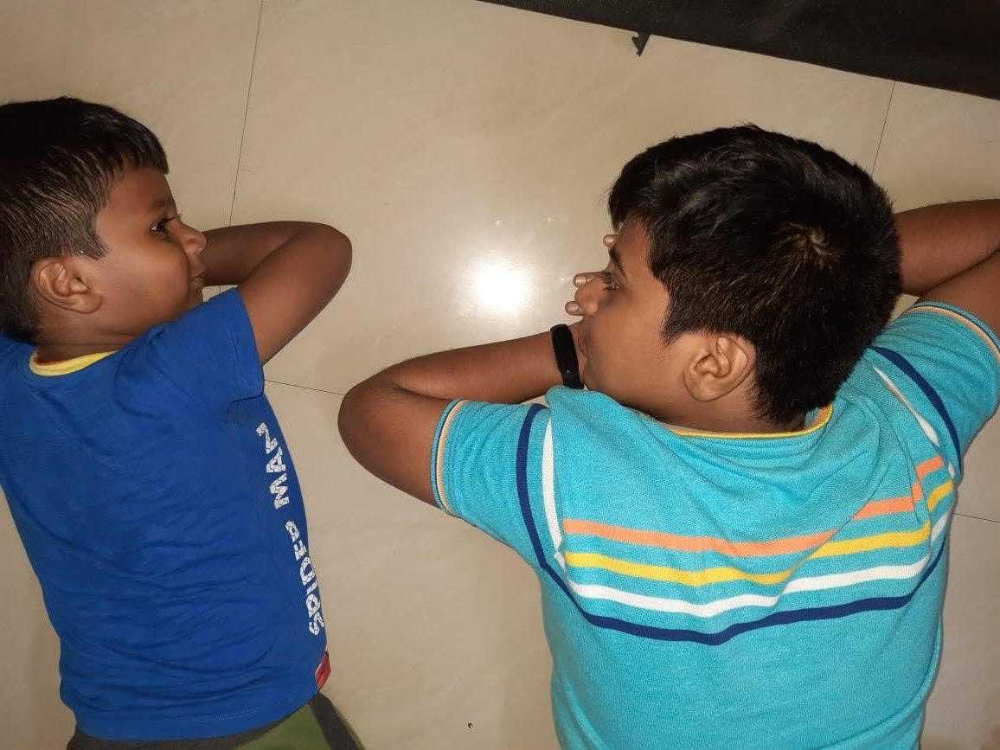

I LIKE TECHNOLOGY THAT CAN MAKE HUMANS SUPERHUMANS!

All about the newest tech
Meet G Sai Sushvik, an enthusiastic and bright 8th-grade student with a deep passion for technology and robots. Born with an innate curiosity, Sushvik has always been drawn to the world of gadgets and automation. His eyes light up at the mention of the latest technological advancements, and he eagerly explores the realms of artificial intelligence and robotics. Sushvik's love for technology started at a young age when he dismantled his first toy to understand how it worked. Since then, he has been on a relentless quest for knowledge, constantly tinkering with gadgets and devices to unravel their mysteries. His room is a makeshift laboratory filled with wires, circuits, and a variety of gadgets that he has either built or disassembled in his quest for understanding. In school, Sushvik is known for his keen interest in science and mathematics, excelling in subjects that allow him to explore the logical and technical aspects of the world. His teachers often find themselves amazed by his insightful questions and the depth of his understanding of complex technological concepts. Outside the classroom, Sushvik can be found participating in robotics clubs and tech competitions. He thrives in the collaborative environment of these activities, where he can share ideas and learn from other tech enthusiasts. His dream is to contribute to the field of robotics and artificial intelligence, envisioning a future where technology improves the lives of people around the world. Despite his advanced understanding of technology, Sushvik remains a typical 8th-grader at heart. He enjoys playing video games, watching science fiction movies, and reading books on futuristic technologies. His room is adorned with posters of his favorite robots and tech icons, serving as daily inspiration for his ambitious goals. G Sai Sushvik is a young technophile on a journey to unravel the secrets of the digital age, and his passion for technology is bound to propel him toward a future filled with innovation and discovery.
The latest technology continues to push boundaries, shaping the way we live, work, and connect. Innovations in artificial intelligence are driving advancements in various sectors, from healthcare and finance to transportation and communication. Quantum computing is on the horizon, promising unprecedented processing power, while 5G networks are revolutionizing data speed and connectivity. The Internet of Things (IoT) seamlessly integrates devices, creating a web of interconnected smart gadgets that enhance efficiency and convenience. Augmented and virtual reality are transforming entertainment and education, offering immersive experiences. Biotechnology breakthroughs, like CRISPR gene editing, hold the potential to revolutionize healthcare and genetics. As technology evolves, its impact on society becomes increasingly profound, presenting both opportunities and challenges in this era of rapid advancement.
Meet Sai Sushvik, a resilient individual who faces life with determination despite grappling with a locomotive disability. Sushvik, with an indomitable spirit, navigates the challenges posed by his condition with grace and courage. His daily life is a testament to his unwavering perseverance, as he tackles mobility obstacles with an inspiring resilience. Sushvik refuses to let his physical limitations define him, instead focusing on his abilities and passions. Whether engaging with technology, pursuing academic interests, or participating in social activities, Sai Sushvik stands as a beacon of strength and a reminder that one's spirit can triumph over any physical constraint. His journey serves as an inspiration to those around him, demonstrating that the human spirit can soar beyond the boundaries of disability, embracing life with a tenacious and positive outlook.
saisushvik.pnt@gmail.com